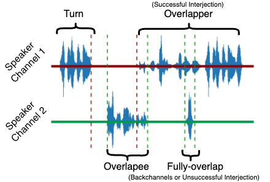

Loading...
 Loading...
Loading...
Thanks for your interest in participating in the listening test. This survey will roughly take 20 minutes. We would like to ask you some questions regarding personalities in real conversation.
In this experiment, we want to see how different conversation traits relate to certain personalities. You will be given one of five possible personalities. For each conversation trait (such as "Many Laughters"), please decide whether that trait matches (is "aligned" with) the given personality. Below are some examples to guide you:
This is the end of definitions of the terms we will use in the survey. You can now proceed to the next page. There are ways for checking your attention through the survey. If a certain number of the scores are answered unreasonably, you will not be paid. So, do not fill out the survey randomly.
- Example 1: If you believe someone with Personality A laughs very often, choose "aligned" or "very aligned" for "Many Laughters".
- Example 2: If you are unsure how long someone with Personality A speaks in one turn, choose "neutral" for "Long Talking Time per Turn".
- Example 3: If you believe someone with Personality A rarely uses negative language, choose "opposed" or "very opposed" for "Many Responses with Negative Sentiment".
Definition of Conversation Terms

- Turn: Everything one speaker says from when they start speaking until they stop or someone else interrupts.
- Overlappee: The person who is being interrupted or talked over.
- Overlapper: The person who does the interrupting or talks over someone else.
- Overlap: A situation where the overlappee stops talking before the overlapper finishes.
- Fully overlap: A situation where the overlappee continues speaking even after the overlapper stops.
- Backchannel: Brief feedback from the listener indicating their reaction or understanding without trying to take over the conversation. These are split into two types:
- Emotive backchannels: Express the listener's emotional state, such as "wow" to convey surprise or "Ew!" to represent disgust.
- Cognitive backchannels: Reflect the listener's cognitive state or thought processes like "Oh, I see" to indicate realization or "Ah!" for understanding.
This is the end of definitions of the terms we will use in the survey. You can now proceed to the next page. There are ways for checking your attention through the survey. If a certain number of the scores are answered unreasonably, you will not be paid. So, do not fill out the survey randomly.
Thank you very much!
We are sorry, but the following error occured during your submission:
Please submit the results to our server. Entering a name or email address is not mandatory but it would help us to contact you if we have further questions. You can also leave a comment.
Please download and save the results. Entering a name or email address is not mandatory but it would help us to contact you if we have further questions. You can also leave a comment.
| Name: | |
| Email: | |
Results should be send to
00:00
Volume